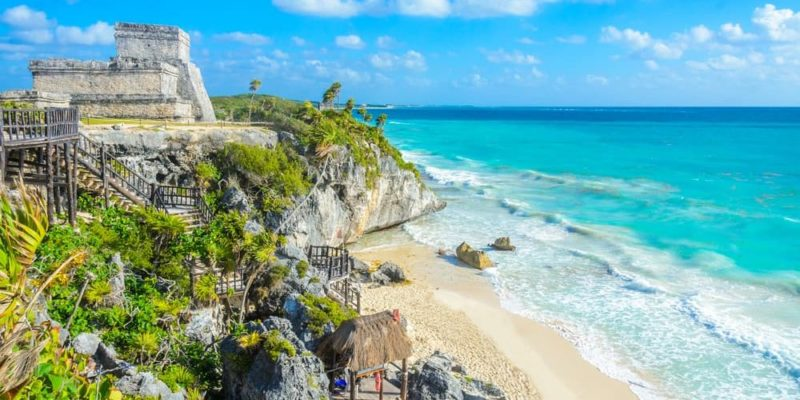

La propuesta consiste en una política general para la protección del medio marino, que incluye la discusión de la pausa precautoria, cuyos tiempos dependerán del acuerdo al que se llegue. La propuesta será discutida en la próxima reunión de la ISA, a finales de julio de 2024 y, en caso de haber quórum (81 de los 167 países miembros de la ISA) podría ponerse a votación. La región que está en juego es la Zona Clarion-Clipperton (CZZ, por sus siglas en inglés ), ubicada en el Océano Pacífico, desde Hawai hasta México, debido a que en su lecho marino hay millas de nódulos polimetálicos con cifras aparentemente inmensas de cobalto y níquel, minerales que servirían para la construcción de automóviles eléctricos. De los 31 contratos de exploración de minerales en los fondos marinos que ha aprobado la ISA, 19 han sido para nódulos polimetálicos, y 17 de ellos se han solicitado en la CZZ. “El argumento verde es que necesitamos los minerales del fondo marino para la transición energética” , dice a SciDev.Net Daniel Cáceres Bartra, biólogo marino peruano y representante de la organización Sustainable Ocean Alliances (SOA). Muchos han promovido estos minerales “como el gran milagro porque supuestamente estaban ahí reposando y solo iban a ir a recolectarlos”. Pero ahora se sabe que esta zona tiene una gran riqueza ecológica pues los nódulos son el hábitat de muchas especies. Algunas son conocidas, como esponjas y corales, pero la mayoría se desconocen. Un estudio reciente confirmó que “hay una falta histórica de trabajo taxonómico en la región”y que “la proporción de especies no descritas en la CZZ en general se estima en un 92 por ciento”. “Si no se sabe qué especies hay, mucho menos vamos a saber qué rol ocupan o cómo interactúan con procesos de incidencia global”, dice a SciDev.N y la chilena María Jesús Ovalle, ingeniera en recursos naturales renovables y analista internacional independiente. Falta saber mucho, pero la carencia de evidencia científica “no es razón para no tomar medidas para proteger el medio ambiente marino”, afirma. La preocupación sobre la posible explotación de la zona ha aumentado debido a que, en la última reunión de la ISA, realizada a mediados de julio, no se llegó a ningún acuerdo sobre la regulación. Esto implica que los países interesados en la minería marina, como Nauru, un pequeño país insular al norte de Australia, podrían iniciar proyectos de explotación de los fondos marinos sin que haya una normativa vigente. “Sin duda es un escenario de riesgo”, dice Lillo. Hay varios países interesados en iniciar la explotación, y la falta de regulación propicia “que buena parte de las decisiones descansen en la autorregulación de los países y en su buena fe”. 07/03/2023
No importa que cada vez haya más conocimiento si no lo sabemos aplicar.
La amistad es una de las cosas más bonitas que podemos vivir, pues los amigos no vienen de serie, sino que se eligen.
Las personas estamos en continuo crecimiento todo el tiempo. Nunca se sabe lo suficiente.
Leonardo José Geney Lopez
Leonardo José Geney Lopez
Abre una nueva pestaña con:CTRL+T.